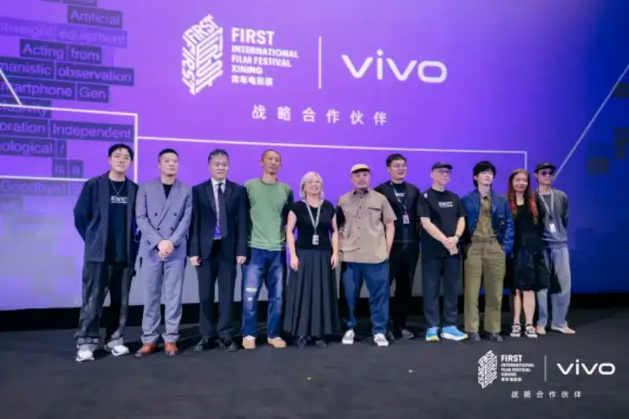
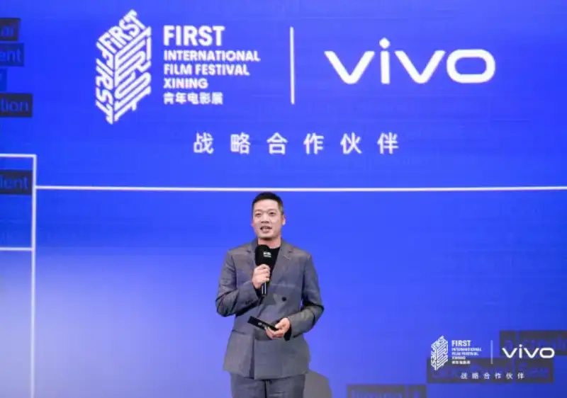
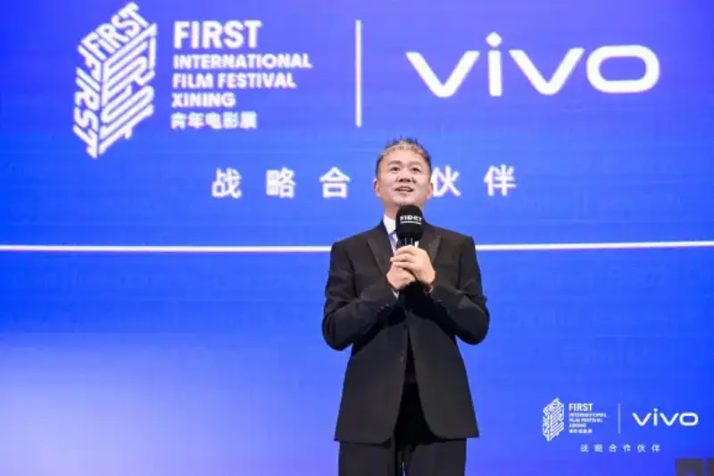
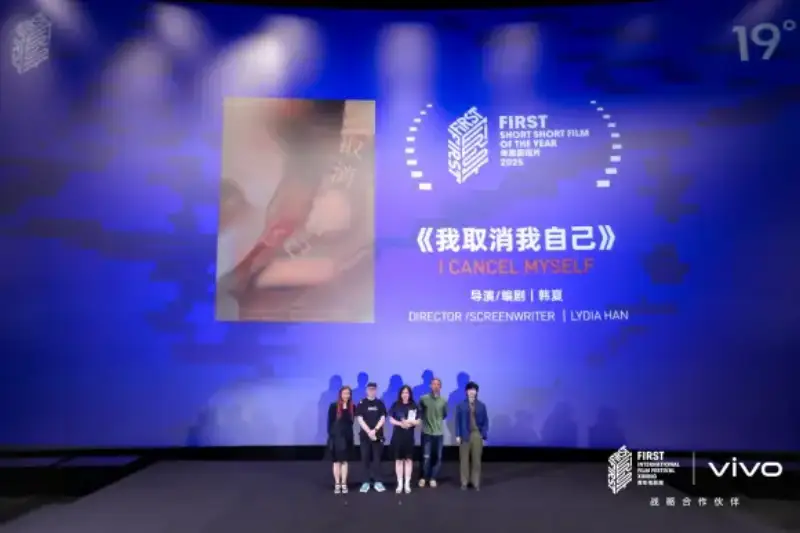
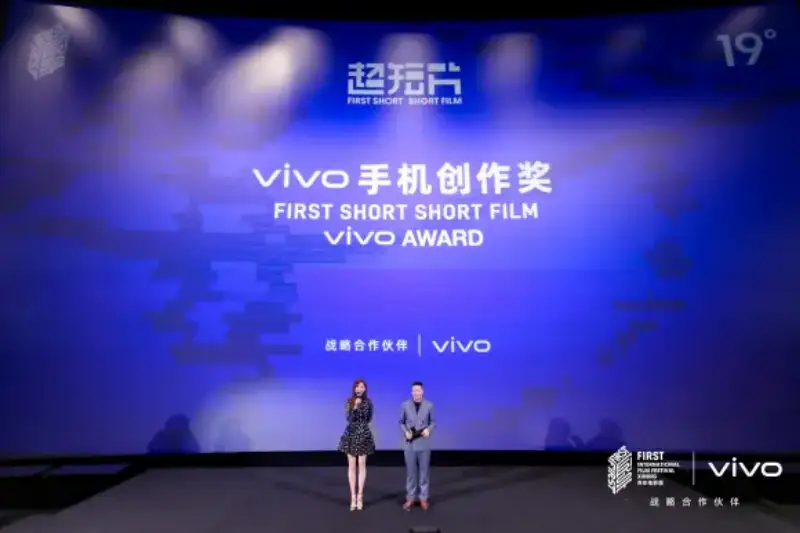
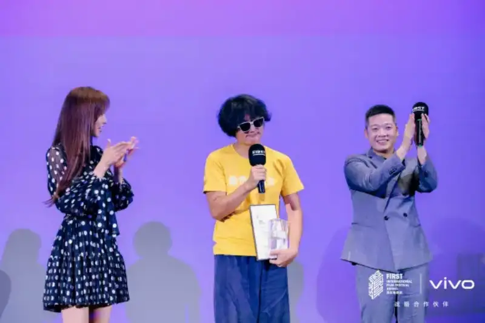
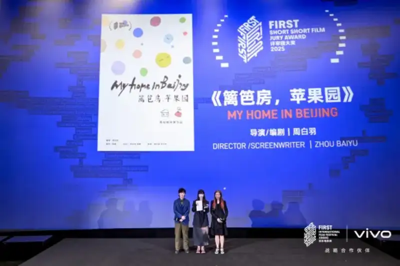
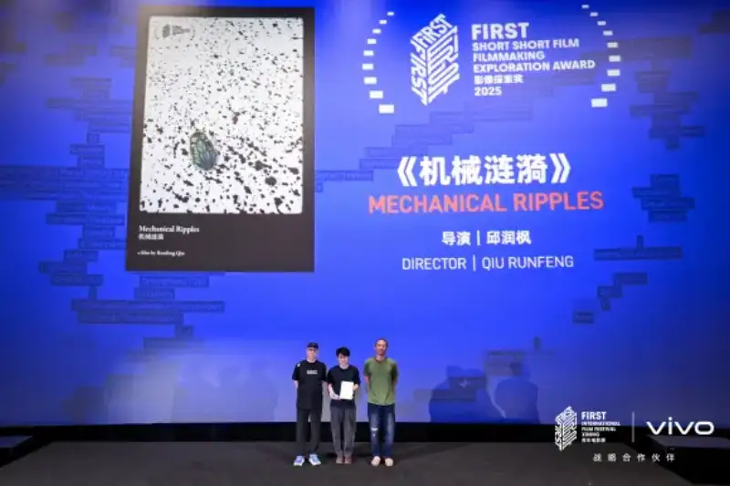

On July 25, 2025, the 6th vivo x FIRST Micro-Short Film Awards were held in Xining. Among the 20 shortlisted works, I Cancel Myself by director Han Xia won the annual micro-short film honor. The Most Expensive Noodles by director Tu Hailun won the vivo Mobile Creation Award. Hedge House, Apple Orchard by director Zhou Baiyu won the Jury Grand Prize. Mechanical Ripples by director Qiu Runfeng won the Image Exploration Award.
Cheng Gang, senior vice president of vivo and president of vivo China, Song Wen, founder of the FIRST Youth Film Festival, micro-short jurors Bao Dexi, Dong Zijian, Lu Ye, and Zhang Dapeng, and actors Lin Chi-ling and Yuan Hong attended the event.

At the 6th micro-short film awards
At the milestone of vivo's 30th anniversary and the sixth year of the micro-short section, Cheng Gang, senior vice president of vivo and president of vivo China, looked back on the past and forward to the future of the vivo x FIRST micro-short section. He said: 'Over six years, vivo and the FIRST Youth Film Festival focused on one thing: turning micro-short film from an idea into a lively platform. Creators around the world use phones to break with traditional storytelling, and make five minutes a new cinematic form. This year is vivo's 30th anniversary. We have long walked alongside our users and the young, moving forward in what we love. We will keep making the best mobile imaging devices and be an efficient, caring creative partner. Through technology, we bring a different, and much better experience, help everyone turn life into a film, and enjoy the joy of creation.'

Cheng Gang, senior vice president of vivo and president of vivo China, speaks
Song Wen, founder of the FIRST Youth Film Festival, said: 'The micro-short section has entered its sixth year, and we have helped many young creators complete the loop of growth. This year the micro-short section also went into universities and held 433 offline screenings. We hope to keep lowering the barrier to image creation, let more young people pick up light tools like phones, and freely express their true feelings. Together with this fresh young energy, we will explore a more imaginative new future.'

Song Wen, founder of the FIRST Youth Film Festival, speaks
Juror Bao Dexi said: 'A story has to be expressed through images, and the phone is the lightest mobile device. Five minutes can be colorful, and you can condense a whole life into five minutes. I hope to see more creators break the rules of traditional film and find new ways to make freer, more imaginative images and work.'

Juror Bao Dexi speaks
Strong works drive a creative wave, and phones capture the cinema of daily life
This year's vivo x FIRST micro-short section gathered many works that are fresh in theme, structure, and visual style. It keeps driving the two-way boost of narrative language and imaging technology, and it sets off a new wave of five-minute expression.
I Cancel Myself, the annual micro-short film, uses the view of a middle-aged woman to face the resolve and hope of women moving toward a new life under the double pressure of society and daily life. The film was shot on the vivo X200 Ultra. With its three Zeiss master prime lenses, it vividly shows a fresh view of a cramped space and the micro-changes in the lead's face. In a powerful form, it encourages women to explore the many possibilities beyond their predicament.

Awarding the annual micro-short film I Cancel Myself
The vivo Mobile Creation Award winner, The Most Expensive Noodles, tells a real-life fairy tale across nine years in the form of a silent film. Shot on the vivo X200 Pro, it uses full-range 4K 60fps 10-bit Log video to draw out the visual color clash between the Bai family noodle shop and the little black child. With detailed, textured images, it conveys a wordless warmth that cuts through a cold world.


Awarding the vivo Mobile Creation Award winner The Most Expensive Noodles
The Jury Grand Prize winner, Hedge House, Apple Orchard, shows a migrant girl in Beijing using AI to piece together a hazy image of the city in a subway tunnel. It turns the memory of the last train into an underground drift, letting poetry and wistfulness coexist in this escape. The Image Exploration Award winner, Mechanical Ripples, weaves rhythm, color, and motion into a unique image, as the mechanical action of a wind-up frog spreads across white paper like ink ripples.

Awarding the Jury Grand Prize winner Hedge House, Apple Orchard

Awarding the Image Exploration Award winner Mechanical Ripples
Including the two winning works I Cancel Myself and The Most Expensive Noodles, this year 10 works shot on the vivo X200 series were shortlisted for the competition and special screenings. In Family Set Meal, director Chen Yanbin uses the lightness and flexibility of the vivo X200 Ultra to decode the unspoken emotional links between three generations of women. In Bond Bridge, director Wu Xichen traces the free and romantic growth of love in the golden hour of a wheat field, and, with the X200 Ultra's strong full-range 4K portrait video, high dynamic range, and 10-bit color depth, it shows the vivid flow of delicate feeling. Snowy's Choice, made by non-professional director Takeshimoto Issei on the vivo X200 Ultra, with full-range OIS optical video stabilization, smoothly records the lively moments of a puppy running and jumping, proving the endless possibility of turning life into a film. At the awards, the short film Future Hymn, directed by Han Yan and shot on the vivo X200 Ultra, was also screened. Through the heartfelt acting of Ye Tong and Zhang Xincheng, it explores future technology and the mother-child bond from a forward-looking view, and it sets a new audio-visual standard for phone cinema.
Six years have built a thriving micro-short ecosystem, and vivo helps creators express their true feelings
2025 marks the sixth year of vivo and the FIRST Youth Film Festival as strategic partners, and of the joint micro-short section. Since 2020, this section has been the first official festival competition in China for micro-short films (shot on non-professional devices, with a narrative under five minutes). It gives today's mobile image creation diverse points of reference and pioneering value standards. As a founder and driver, vivo not only upgrades imaging technology and gives creators tools to record life, but also, through ecosystem building, turns the micro-short section into a dream factory for phone cinema and a cradle for young creators.
This year's micro-short competition received 603 works from China, Japan, Singapore, France, Australia, and other countries. Of these, 328 were shot on phones. Most creators are Gen Z aged 20 to 24, and creators aged 30 and under make up 76 percent. Works shot on vivo phones number 119, or 36 percent. Over six years, 43,150 entered works and 188 shortlisted and screened creators have come into the view of the micro-short section, writing an image ethnography of today's China through diverse views and fresh expression. From The Night We Decided to Give Up, made by director Yang Qing on the vivo X50 series, to Travelers Fear Not, made by director Zhang Xiaosha on the vivo X80 Pro, to I Cancel Myself, shot by director Han Xia on the vivo X200 Ultra, these influential works, through a three-dimensional insight into and care for social feeling, have stirred broad resonance and widened the space and possibility of phone-cinema storytelling.
To support more young creators, vivo will also work with the FIRST Youth Film Festival to launch a Youth Phone Film Project. It will go into universities across the country and, through professional courses and creative support, use the imaging power of vivo that professional directors have already proven to empower young creators, help them start and grow, and keep adding fresh expression to the micro-short ecosystem.
As an innovation leader in mobile imaging, vivo has long used technology to nurture image expression and empower humanistic image creation. It also walks alongside the young, builds a stage for young creators to emerge, and listens to and amplifies the voice of the new generation. In the future, vivo hopes to work with more like-minded people, empower creators to express their true feelings on the stage lit by light and shadow, and share the humanistic joy of mobile image creation.